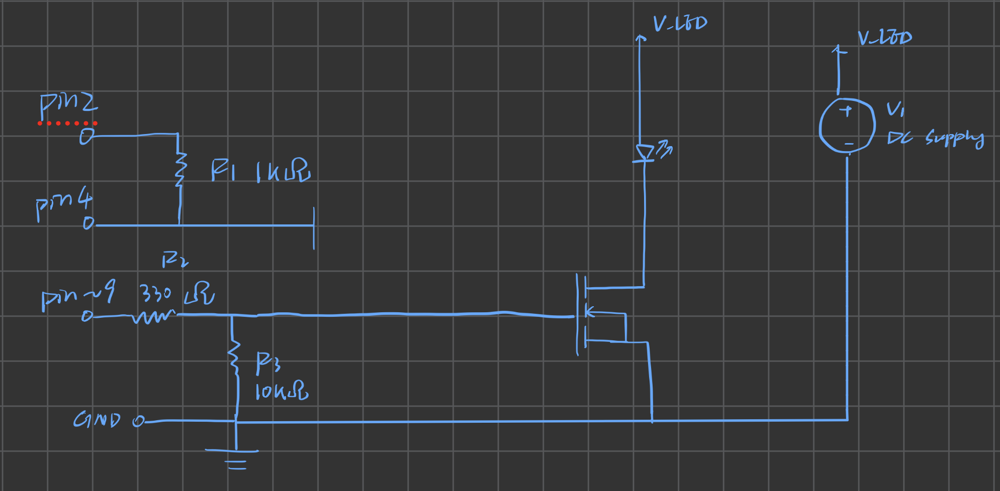
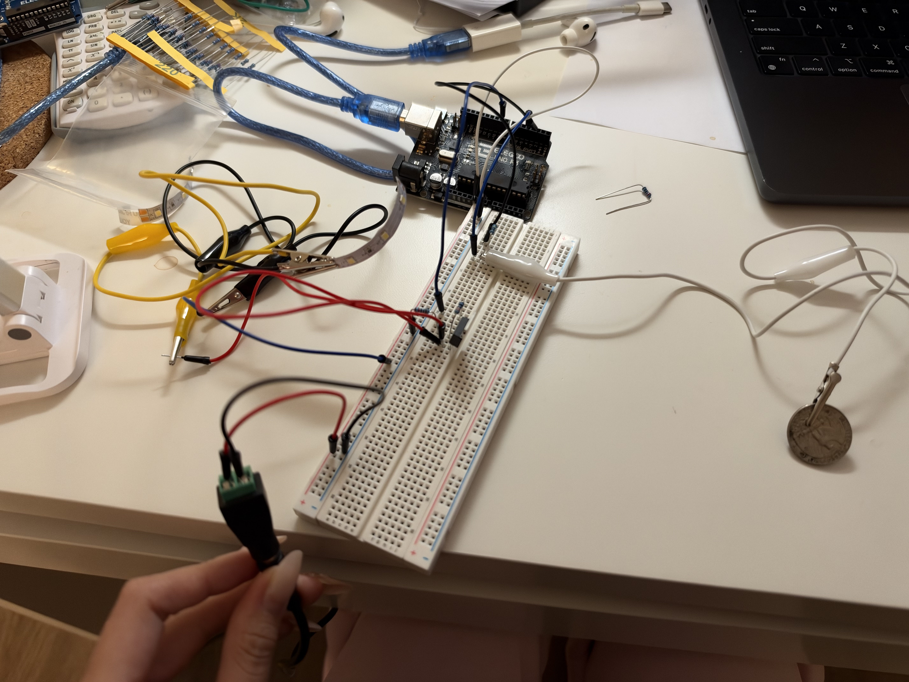
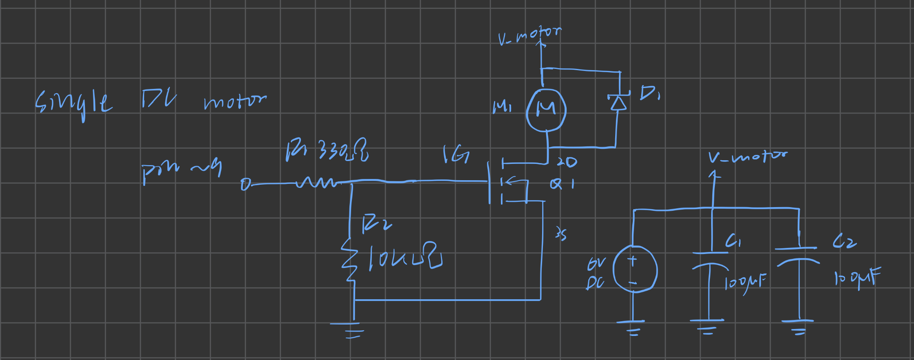
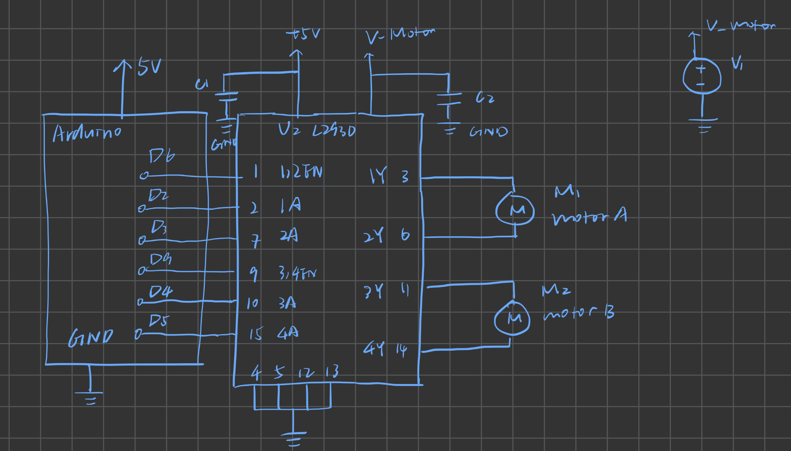

Rebecca Liu, HCDE 439, Autumn 2026
I built a touch-activated lamp with an LED strip powered by an external DC supply. The strip starts at a dim standby level. Touching the coin electrode fades it up to full brightness, holds it there for three seconds, and fades it back down. The Arduino sends a PWM signal to an N-channel MOSFET, which switches the current through the strip.

Load and power supply. The LED strip's positive lead connects to the external 12 V DC supply. Its negative lead connects to the MOSFET drain (pin 2). The source (pin 3) connects to ground. The Arduino and the external supply share a ground, so the gate voltage from D9 and the source voltage use the same 0 V reference.
330 Ω gate resistor. The MOSFET gate behaves like a small capacitor. The resistor limits the brief current when D9 charges the gate. With an ideal 5 V output and an initially discharged gate, the estimated initial current is 5 V ÷ 330 Ω ≈ 15 mA, below the Arduino Uno's 20 mA per-pin rating. Arduino Uno R3 pinout
10 kΩ pull-down resistor. The pull-down keeps the gate near 0 V while the Arduino resets and D9 is floating. When D9 is HIGH, the steady current through the two resistors is approximately 5 V ÷ (330 Ω + 10 kΩ) = 0.48 mA. The gate voltage is approximately 5 V × 10 kΩ ÷ (330 Ω + 10 kΩ) = 4.84 V. The IRLZ44N datasheet specifies an on-resistance at a 4.5 V gate drive. IRLZ44N datasheet
Expected voltages and currents. The source stays at 0 V. With the MOSFET on, the gate is approximately 4.84 V and the drain is close to 0 V. With the MOSFET off, the gate is near 0 V and the drain is expected to rise toward the 12 V supply voltage. At full brightness, the strip and MOSFET carry the same load current. Based on the strip's rated power, the expected current is 16 W ÷ 12 V ≈ 1.33 A. This is approximately 2.8% of the IRLZ44N's 47 A absolute maximum continuous drain current (1.33 A ÷ 47 A × 100%). The 47 A rating applies at a case temperature of 25 °C and a gate-to-source voltage of 10 V.
Touch sensor. A 1 MΩ resistor connects D2 (send) to D4 (receive). The coin connects to D4. The resistor slows charging enough for the CapacitiveSensor library to detect the change in capacitance when a finger touches the coin.

The sketch prints the touch readings to the Serial Monitor and triggers the fade when a reading exceeds the threshold. With the pad untouched, the readings were TODO: untouched range. With the pad touched, the readings were TODO: touched range.
#include <CapacitiveSensor.h>
// D2 sends the signal. D4 receives it and connects to the coin electrode.
CapacitiveSensor touchPad(2, 4);
const int gatePin = 9;
const long touchThreshold = 1000;
const int idleLevel = 20;
const int fullLevel = 255;
const int fadeStepDelayMs = 8;
const int holdTimeMs = 3000;
void setup() {
pinMode(gatePin, OUTPUT);
Serial.begin(9600);
analogWrite(gatePin, idleLevel);
}
void loop() {
long reading = touchPad.capacitiveSensor(30);
Serial.println(reading);
if (reading > touchThreshold) {
// Increase the PWM duty cycle to fade up.
for (int level = idleLevel; level <= fullLevel; level++) {
analogWrite(gatePin, level);
delay(fadeStepDelayMs);
}
delay(holdTimeMs);
// Decrease the PWM duty cycle to return to standby.
for (int level = fullLevel; level >= idleLevel; level--) {
analogWrite(gatePin, level);
delay(fadeStepDelayMs);
}
}
delay(50);
}For the IRLZ44N shown in my schematic, pin 2 is the drain and pin 3 is the source. The datasheet's Absolute Maximum Ratings table lists a continuous drain current of 47 A at a case temperature of 25 °C and 33 A at a case temperature of 100 °C, both with a gate-to-source voltage of 10 V. IRLZ44N datasheet


// Motor A: enable = D6, input 1 = D2, input 2 = D3
// Motor B: enable = D9, input 3 = D4, input 4 = D5
speed = 255
function setDirection(inputA, inputB, direction):
if direction is FORWARD:
digitalWrite(inputA, HIGH)
digitalWrite(inputB, LOW)
else:
digitalWrite(inputA, LOW)
digitalWrite(inputB, HIGH)
function runPair(directionA, directionB):
analogWrite(D6, 0)
analogWrite(D9, 0)
setDirection(D2, D3, directionA)
setDirection(D4, D5, directionB)
analogWrite(D6, speed)
analogWrite(D9, speed)
wait 2 seconds
setup:
configure D2, D3, D4, D5, D6, and D9 as outputs
loop:
runPair(FORWARD, FORWARD)
runPair(BACK, BACK)
runPair(FORWARD, BACK)
runPair(BACK, FORWARD)I used ChatGPT to troubleshoot my circuit after several attempts to get it working. It suggested checking the wiring and helped me work through possible causes, but after about four to five hours of troubleshooting, I still had the same problem. The next day, I asked my TA for help, and they replaced my Arduino Uno. Looking back, I would test with a second board earlier to narrow down whether the problem was with the board or the circuit.